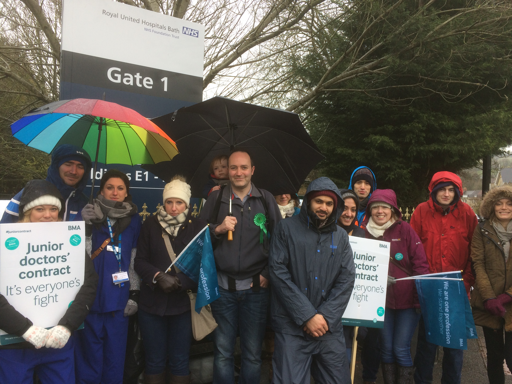

A Letter to the Bath Chronicle printed in the paper on 24th October 2024

Throughout my time ‘in politics’ and as the Green Party candidate for Bath’s MP in multiple elections I have campaigned for a publicly owned and operated NHS, and against privatisation.
The Green Party is the only party with this policy. This is true despite what Labour candidates and activists have told me over the years, claiming to be the ‘party of the NHS’ and that they are also against privatisation, despite all evidence to the contrary. Unfortunately this seems to be also widely held by some voters, who believe that Labour is still a left-leaning party at heart.
I wonder how many of the voters who put Labour into second place in the last election will therefore be somewhat surprised that, under the new Labour government, community health services in BaNES, Swindon and Wiltshire have just been handed over to a profit-making company in a huge £1.3bn deal?
They will sometimes tell voters that this is somehow ‘not privatisation’. That is a lie. Services that could be run by the NHS (with any savings from efficiency improvements going back into improving other NHS services) will be run by a company with an incentive to spend as little as it can on care so that it can maximise profits. This is NHS money given to shareholders instead of being spent on patients.
This is just the beginning - under Wes Streeting, the private sector is set to take control of much more of our NHS to profit from.
The Green Party is the only party that will put NHS services back into public hands. For Greens, it is a fundamental principle that the NHS should be run for people, not profit. This is a view shared by the majority of the public.
Yours faithfully,
Dom Tristram,
2024 Green Party MP candidate for Bath
To receive my new politics posts directly by email or in the Substack app, please subscribe